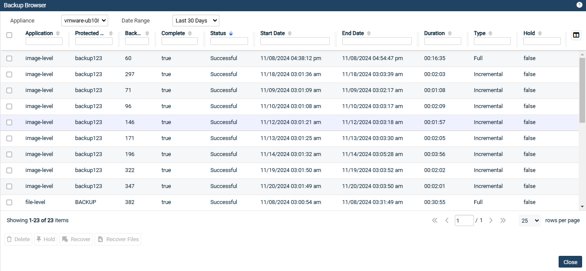
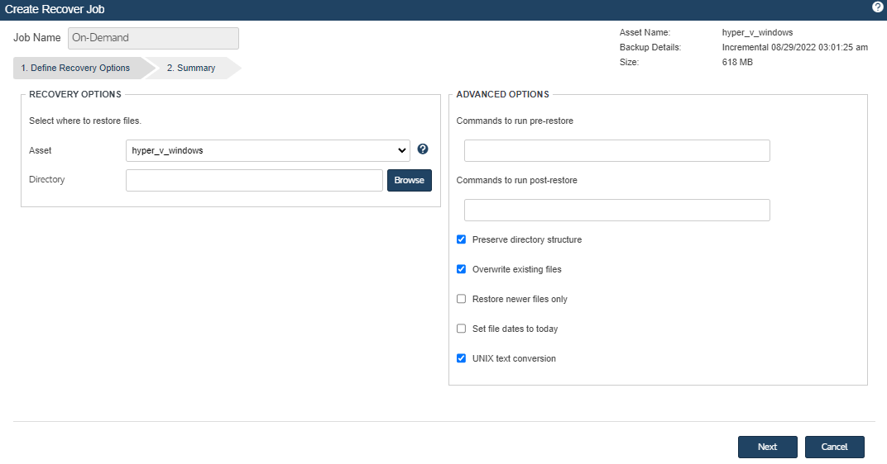
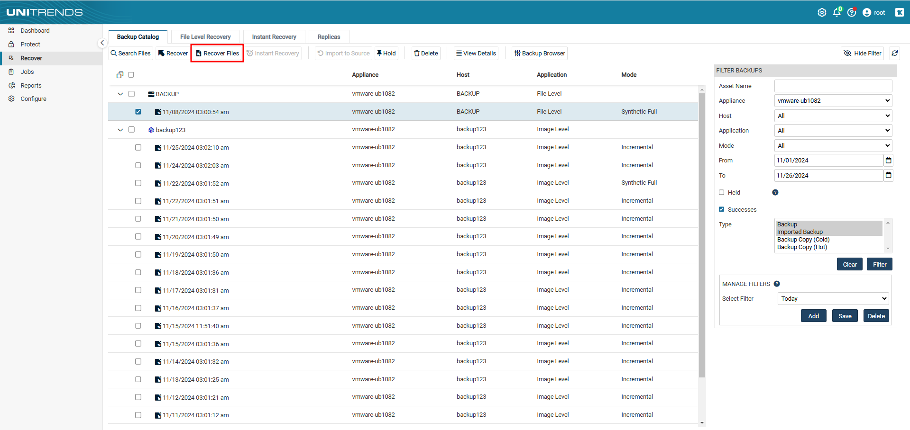

파일 백업의 복구 절차¶
백업 에이전트를 사용해 실행한 파일 백업의 복구 절차에 대해 설명합니다.
파일 백업본을 사용하여 전체 복구와 개별 파일 복구를 수행할 수 있습니다.
대상 시스템은 이 절차를 실행하기 전에 유효한 백업본을 가지고 있어야 합니다.
이 페이지에서 설명하는 모든 절차는 모든 운영체제의 파일 백업 복구에 적용됩니다.
1. 복구 지점(Recovery Point) 선택¶
※ 참고사항:
각 백업은 자산 전체의 복구 지점을 생성합니다.
이 복구 지점에는 백업 작업 동안 캡처된 데이터와 함께 백업 그룹 내 모든 종속 데이터가 포함됩니다.전체 백업을 복구하거나 특정 파일을 선택적으로 복구할 수 있습니다.
전체 백업 복구는 그룹 내 모든 종속 데이터를 복구합니다.
예를 들어, 증분 백업을 복구하면 해당 증분 백업의 상위 전체 백업부터 모두 복구됩니다.
(1) 백업본 선택:
Backup Catalog 또는 Backup Browser에서 선택할 수 있습니다.
Backup Catalog:
백업 카탈로그에서는 백업본이 아래에 표시됩니다.
우측 FILTER BACKUPS에서 날짜 및 표시 형식을 지정할 수 있습니다.
표시되는 대상을 확장하면 해당 시스템의 백업본을 확인할 수 있습니다.

Backup Browser:
백업 브라우저는 고급 검색 및 필터 옵션을 제공합니다.
Unitrends 어플라이언스와 날짜 범위를 조정하여 백업을 검색합니다.
열 필드에 텍스트를 입력하여 디스플레이를 필터링합니다.
열 필드의 화살표를 클릭하여 열별로 정렬합니다. 
2. 전체 복구 수행¶
(1) Recover 버튼 선택:
표시된 백업본 중에서 원하는 복구 시점을 선택한 후 위 Recover 버튼을 클릭합니다.
(2) 복구 옵션 선택:
RECOVERY OPTIONS:
복구할 대상(Asset)과 경로(Directory)를 선택합니다.
ADVANCED OPTIONS:
백업 실행 전, 후에 스크립트를 실행하게 할 수 있습니다.
defualt로 선택되어 있는 옵션은 권장사항이므로 변경하지 않는 것이 좋습니다.
Restore newer files only : 복구할 파일과 동일한 파일이 있는 경우 새로운 파일만 복구하는 옵션이므로, Overwrite 옵션과 반대입니다.
Set file dates to today : 파일을 오늘 날짜로 변경하여 복구합니다. 
(3) 복구 시작:
Next를 클릭하여 설정한 복구 항목을 확인합니다.
Save를 클릭하여 복구를 시작합니다.
(4) 복구 확인:
실시간 복구 현황은 Jobs → Active Jobs에서 확인할 수 있습니다.
3. 개별 파일 복구 수행¶
(1) Recovery Files 버튼 선택:
표시된 백업본 중에서 원하는 복구 시점을 선택한 후 위 Recovery Files 버튼을 클릭합니다. 
(2) 복구할 파일 선택:
파일트리 구조로 좌측에 백업본의 상세 내용이 나열되며, 아래 3가지의 버튼을 조작하여 특정 파일 및 폴더를 선택합니다.
>버튼 : 특정 파일/폴더를 복구에 포함
<버튼 : 특정 파일/폴더를 복구에서 제외
<<버튼 : 특정 파일/폴더 선택을 초기화
선택이 완료되면 Next를 클릭하여 다음 단계를 진행합니다.
(3) 복구 대상 및 옵션:
RESTORE TARGET: 복구하려는 대상과 복구할 경로를 선택합니다.
원본 경로가 아닌 다른 경로에 복구할 경우 Directory를 직접 지정합니다.
EXCLUSIONS: 제외할 파일의 패턴을 입력합니다.
제외할 패턴을 추가하지 않을 경우 비워두셔도 됩니다.
ADVANCED OPTIONS:
백업 실행 전, 후에 스크립트를 실행하게 할 수 있습니다.
defualt로 선택되어 있는 옵션은 권장사항이므로 변경하지 않는 것이 좋습니다.
Restore newer files only : 복구할 파일과 동일한 파일이 있는 경우 새로운 파일만 복구하는 옵션이므로, Overwrite 옵션과 반대입니다.
Set file dates to today : 파일을 오늘 날짜로 변경하여 복구합니다.
(4) 복구 시작:
Next를 클릭하여 설정한 복구 항목을 확인합니다.
Save를 클릭하여 복구를 시작합니다.
(5) 복구 확인:
실시간 복구 현황은 Jobs → Active Jobs에서 확인할 수 있습니다.